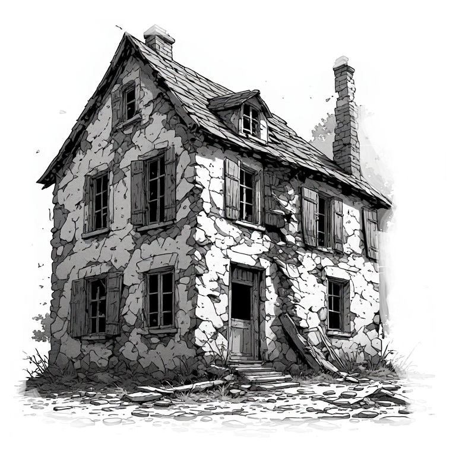

3. Etat des lieux de la vacance : cartographie
Selon les données LOVAC, la vacance des logements en Nouvelle-Aquitaine est estimée à 9,5 %, soit environ 340 000 logements. Une partie de ces logements n’est inoccupée que temporairement, notamment entre deux occupants ou à l’occasion de travaux de remise en état. Cette vacance conjoncturelle accompagne la rotation des ménages et l’entretien du parc, contribuant ainsi à la fluidité des parcours résidentiels.
La présente étude se concentre sur la vacance de longue durée, définie ici comme une inoccupation depuis au moins deux ans et retenue comme indicateur de la vacance structurelle. L’objectif est de repérer les logements durablement inoccupés pour lesquels les acteurs locaux peuvent engager des actions visant à favoriser leur remise sur le marché.
En Nouvelle-Aquitaine, au 1er janvier 2024, cette vacance de longue durée concerne environ 154 505 logements, soit 4 % du parc de logements. Sa répartition départementale, établie à partir des bases de données LOVAC pour le parc privé et RPLS pour le parc social est présentée ci-après.
Logements vacants (+2 ans) — Nouvelle-Aquitaine
| Département | Nb. vacants | Taux | Répartition | Evolution |
|---|

Cette ne mesure pas l’évolution de la vacance mais confirme clairement la tendance à une vacance installée qui plus importante dans les départements de l’Est (+ de 5 % de logements vacants -longue durée-), et a contrario plus faible sur le littoral. La carte suivante de la vacance par EPCI confirme cette une vacance plus importante sur les EPCI de l’Est de la région.
3.1 La vacance par EPCI

La carte met en évidence un contraste ouest–est marqué de la vacance de plus de deux ans. Les taux sont généralement plus faibles sur le littoral et dans les intercommunalités des principaux pôles urbains, où ils se situent souvent entre 1 et 4 %.
À l’inverse, les niveaux les plus élevés, compris entre 9 et 14 %, se concentrent surtout dans le nord-est et l’est de la région, notamment dans la Creuse et l’est de la Corrèze. De nombreux territoires intérieurs présentent également des taux élevés, entre 6 et 9 %.
Cette répartition reste toutefois contrastée : les intercommunalités de Limoges, de Périgueux ou d’Angoulême affichent des taux plus faibles que plusieurs des territoires qui les entourent.
3.2 La vacance par commune

À l’échelle communale, la carte confirme des taux de vacance de plus de deux ans généralement plus faibles sur le littoral et autour des principaux pôles urbains, souvent inférieurs à 4,7 %. Les taux supérieurs à 9,8 % se concentrent davantage dans le nord-est et certains territoires intérieurs, mais des poches de vacance élevée apparaissent également dans le centre et le sud de la région.
Certaines communes relèvent ainsi de la classe la plus élevée, comprise entre 14,5 et 37,2 %. Cette représentation révèle surtout une forte hétérogénéité entre communes voisines, que les moyennes intercommunales atténuent, et souligne l’intérêt d’une analyse locale pour préciser les secteurs les plus concernés.
Les données ayant permis de réaliser cette carte, disponible dans la matrice, mettent en évidence plusieurs situations de vacance particulièrement marquées. Certaines villes moyennes cumulent des taux élevés et des volumes importants de logements durablement vacants, comme Aubusson ou Tulle.
Dans plusieurs de ces territoires, une part importante de cette vacance est ancienne, avec des taux de vacance de plus de cinq ans atteignant des taux important.
Quelques petites communes affichent des niveaux extrêmement élevés — par exemple Bousses : 37,2 %, Saint-Antoine-du-Queyret : 29,2 %, Saint-Georges : 27,9 % ou Saint-Pierre-le-Bost : 26 % — mais ces taux portent parfois sur seulement quelques dizaines de logements. Ils signalent néanmoins une vacance très profondément installée, particulièrement lorsque le taux à plus de cinq ans reste lui aussi élevé : 34,9 % à Bousses, 25,6 % à Saint-Georges, 21,1 % à Saint-Pierre-le-Bost.
À l’inverse, les principaux pôles urbains peuvent présenter des stocks importants en valeur absolue, mais des taux nettement plus faibles. Cette distinction entre volume et taux est essentielle pour identifier les territoires où la vacance constitue un phénomène réellement structurel. Bordeaux compte 4 740 logements vacants depuis plus de deux ans, mais ceux-ci ne représentent que 2,6 % du parc ; Limoges en compte 3 206, soit 3,7 % ; Pau 1 768, soit 3,2 % ; Poitiers 1 502, soit 2,6 %. Cela montre que le nombre brut de logements vacants ne suffit pas à qualifier la gravité d’une situation.
→ Une cartographie de 70 communes (métropole, agglomérations et petites villes) est disponible dans cet onglet. Elle présente la vacance par quartier IRIS et les variations au sein d’une même commune (nombre et % de logements vacants).
Des situations particulièrement marquées :
L'analyse communale fait apparaître plusieurs situations de vacance structurelle conséquente. En ne retenant que les communes comptant au moins 100 logements vacants depuis plus de deux ans, une vingtaine de territoires présentent des taux supérieurs à 10 %. Certaines communes cumulent un taux élevé et un stock conséquent, notamment Aubusson (494 logements ; 15,6 %), Bort-les-Orgues (362 ; 16,2 %), Tulle (1 139 ; 11,1 %) ou Fumel (319 ; 10,4 %). La durée de vacance constitue un indicateur supplémentaire de fragilité : dans plusieurs communes, plus de 60 % des logements vacants depuis deux ans le sont déjà depuis plus de cinq ans. Ces situations traduisent une vacance profondément installée, qui dépasse largement les phénomènes de rotation du marché.
Voir tableau suivant, extrait de la matrice réalisée par le CEREMA.

communes présentant les situations de vacance longue les plus marquées
Sélection : au moins 100 logements vacants depuis plus de 2 ans – LOVAC 2024
| Commune | Vacants +2 ans | Taux +2 ans | Vacants +5 ans | Taux +5 ans | Part des +5 ans parmi les +2 ans |
|---|---|---|---|---|---|
| Saint-Émilion | 218 | 17,1 % | 149 | 11,7 % | 68 % |
| Bort-les-Orgues | 362 | 16,2 % | 173 | 7,7 % | 48 % |
| Aubusson | 494 | 15,6 % | 278 | 8,8 % | 56 % |
| Auzances | 125 | 14,0 % | 80 | 9,0 % | 64 % |
| Bourganeuf | 237 | 13,5 % | 161 | 9,1 % | 68 % |
| Eymoutiers | 202 | 12,6 % | 141 | 8,8 % | 70 % |
| Montagne | 116 | 12,4 % | 79 | 8,4 % | 68 % |
| Châlus | 155 | 12,2 % | 114 | 9,0 % | 74 % |
| Boussac | 117 | 12,0 % | 78 | 8,0 % | 67 % |
| Lathus-Saint-Rémy | 117 | 12,0 % | 76 | 7,8 % | 65 % |
| Sainte-Foy-la-Grande | 226 | 11,9 % | 116 | 6,1 % | 51 % |
| Saint-Laurent-sur-Gorre | 113 | 11,9 % | 52 | 5,5 % | 46 % |
| Bussière-Poitevine | 198 | 11,8 % | 127 | 7,6 % | 64 % |
| Mézin | 118 | 11,8 % | 63 | 6,3 % | 53 % |
| Uzerche | 210 | 11,6 % | 132 | 7,3 % | 63 % |
| Chalais | 147 | 11,6 % | 93 | 7,4 % | 63 % |
| Corrèze | 102 | 11,3 % | 65 | 7,2 % | 64 % |
| Tulle | 1 139 | 11,1 % | 691 | 6,7 % | 61 % |
| Le Dorat | 132 | 11,1 % | 70 | 5,9 % | 53 % |
| Lubersac | 166 | 10,6 % | 105 | 6,7 % | 63 % |
| Fumel | 319 | 10,4 % | 184 | 6,0 % | 58 % |